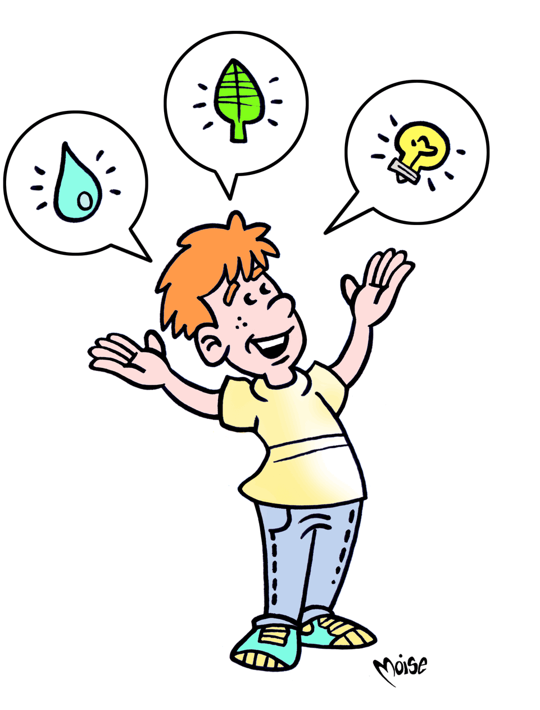

Cittadini
a basso consumo

La strada che il cittadino deve percorrere per diventare ecologico può essere anche… un gioco. Come quello che ti proponiamo qui sotto: devi partire dalla parola CITTADINO e arrivare a ECOLOGICO attraverso una catena formata da cinque parole (OPERATORE, OSSO, PIATTO, PRIMO e RADIO), ciascuna legata a quella che precede e a quella che segue per associazione di idee. Te le forniamo in ordine sparso: a te il compito di individuare la sequenza corretta.